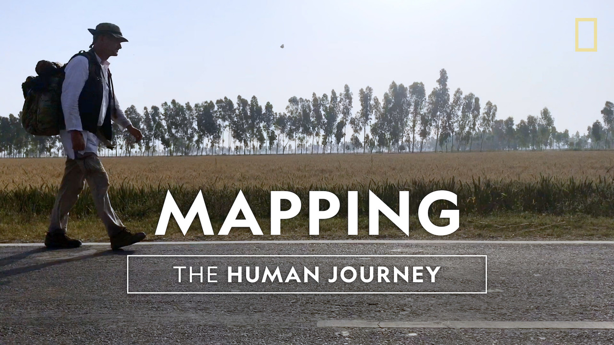

We face a world that is far different from our ancestor’s.But we have the potential to understand and solve the problems of today, many of which are man-made, if we first understand who we are, and how the past has made us. We must know what is unchanging about human nature and recognize what we can and must consciously change to ensure the future for ourselves and our planet.The Human Journey is the journey of the human mind, how it developed, the world it made and the problems it solved, why and how it solved them; and how those solutions affected its evolution and subsequent decisions.
